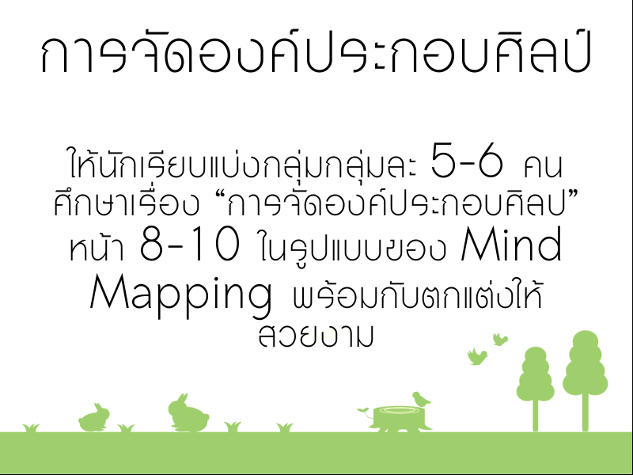

ภาระงาน 1

✍️ ให้นักเรียนแบ่งกลุ่มกลุ่มละ 5 คน แล้วช่วยกันค้นหา "ภาพวาด" หรือ "ภาพถ่าย" จากนิตรสาร หนังสือ หรือจากอินเตอร์เน็ต อย่างน้อยกลุ่มละ 3 ภาพ ส่งผ่านทางอีเมล:
warutbun92@gmail.com
ภาระงาน 2
✍️ ให้นักเรียนช่วยกันวิจารณ์ภาพ หญิงสาวกับท้องทะเล (เทคนิคสีน้ำมัน) โดยแบ่งเป็นขั้นดังต่อไปนี้ (นักเรียนสามารถศึกษาเพิ่มเติมได้จากหนังสือ ทัศนศิลป์ 2 หน้า 2-5)
- ขั้นข้อมูลภาพ
- ขั้นพรรณา
- ขั้นวิเคราะห์
- ขั้นตีความหมาย
- ขั้นประเมินค่า
ภาระงาน 3
